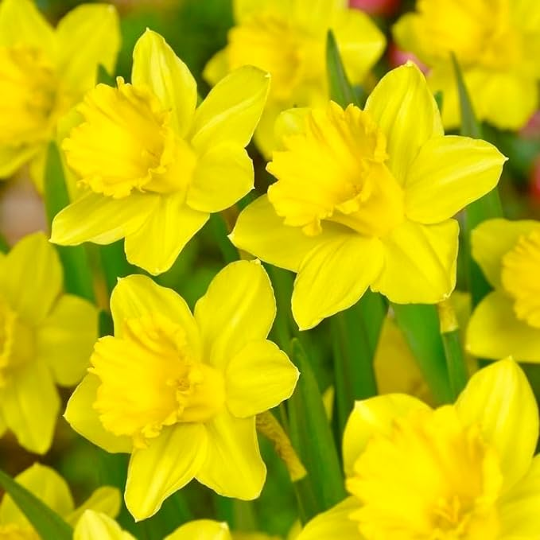

Daffodil

Back to main page
- Narcissus is a genus of predominantly spring flowering
perennial plants of the amaryllis family,
Amaryllidaceae.
- Various common names including daffodil, narcissus and
jonquil, are used to describe all or some members of the
genus.
- Narcissus has conspicuous flowers with six petal-like
tepals surmounted by a cup- or trumpet-shaped corona.
- The flowers are generally white and yellow (also orange
or pink in garden varieties), with either uniform or
contrasting coloured tepals and corona.